Monday
Since the weather was nice I wanted to celebrate my last week of funemployment by going on a big walk. I went from my place -> Twin Peaks -> Ocean Beach -> Land’s End -> my place -> Duboce Park.
Afterwards I went on a Christmas tree run with Midnight runners with “The Enabler” and “La Tacqueria Royalty”. For this run we started over at Fisherman’s Wharf and ran to Chase Center stopping at a bunch of different Christmas trees along the way.
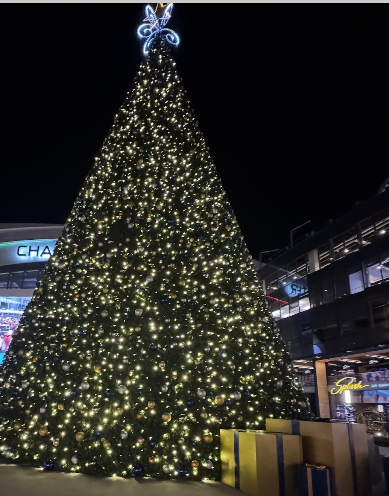
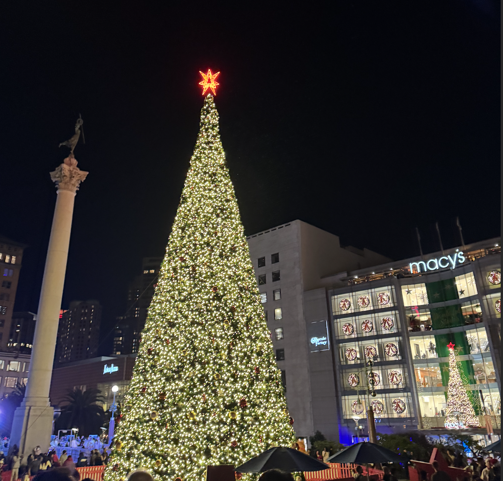
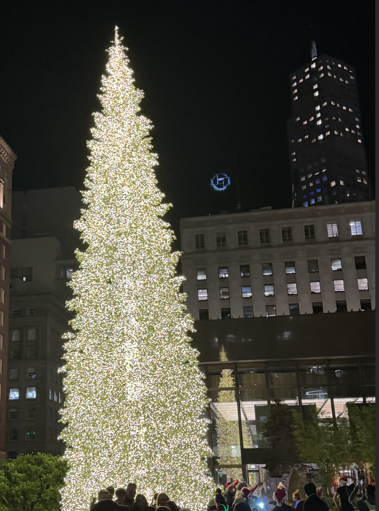
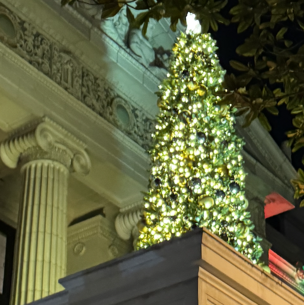
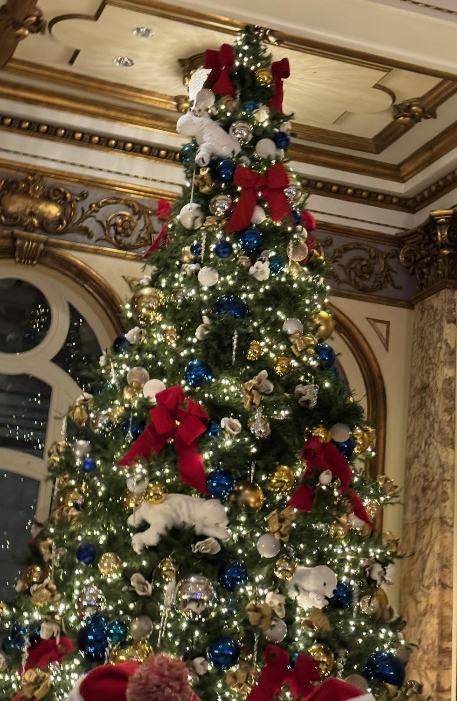
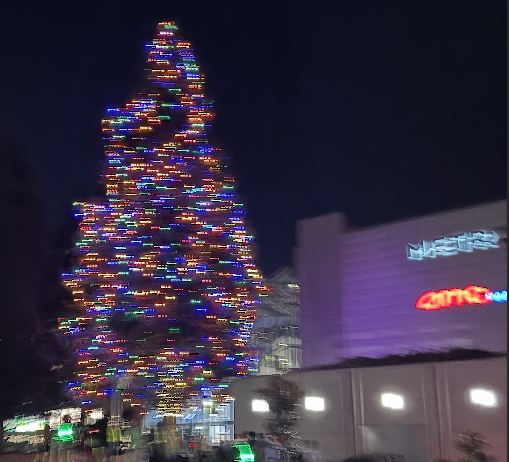
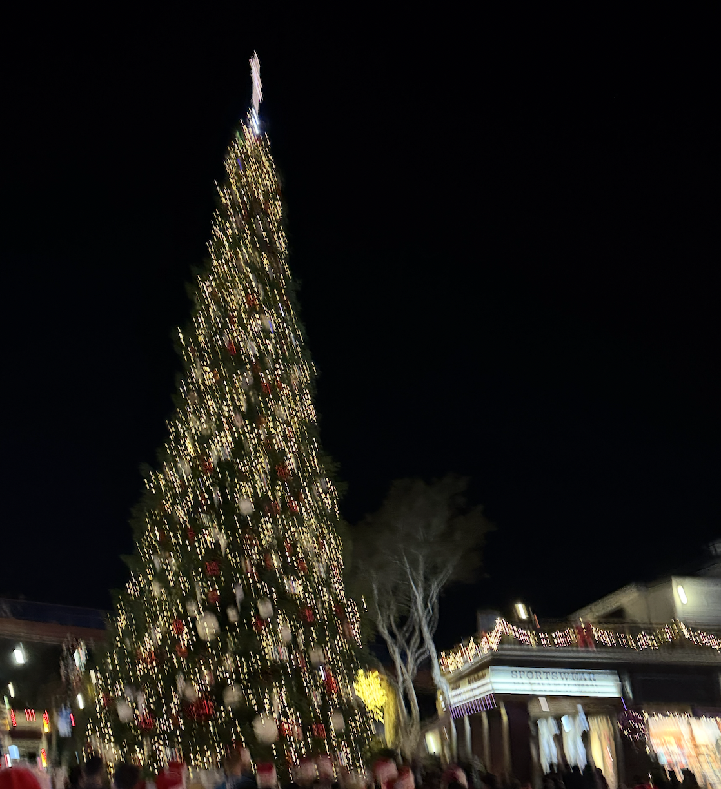
The run itself was pretty good! Once again “La Tacqueria Royalty” and I had wildly different Strava paces despite running next to each other for most of the run which continues to baffle the mind.
It turns out one of “Granola Girlie’s” friends also does Midnight Runners which was a fun coincidence.
Tuesday
The weather proved unexpectedly good so I decided to get out and do something I never did before and hike to the top of San Bruno mountain.
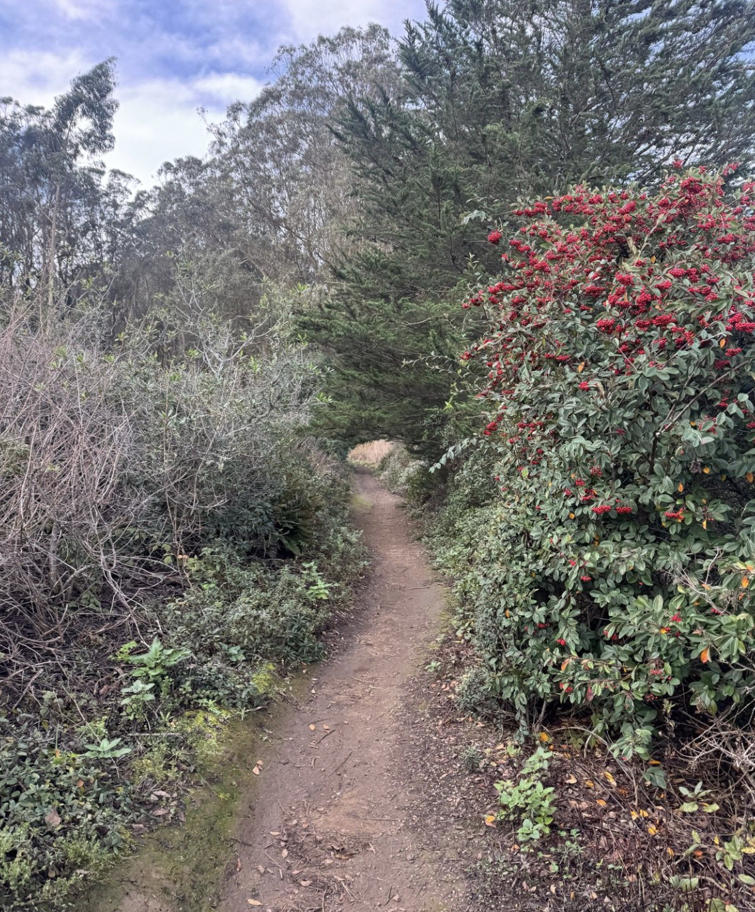
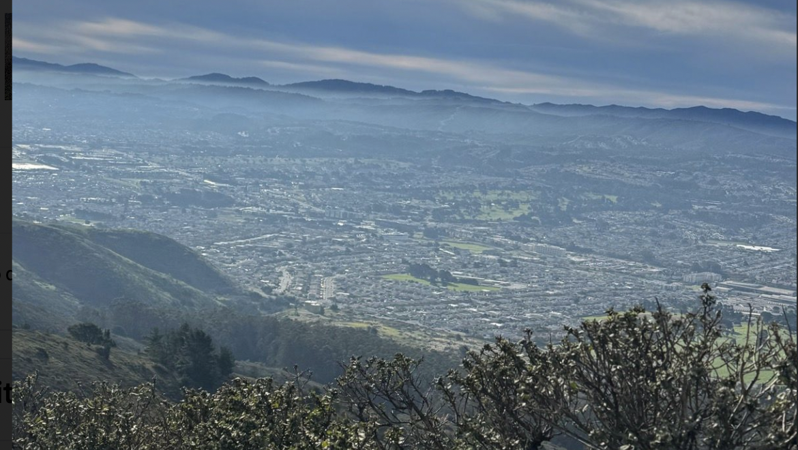
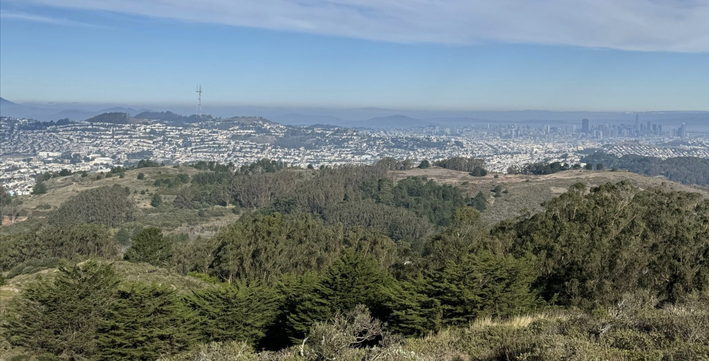
Overall I found the views to be reasonable but admittedly not my favorite in SF. That being said I am glad I did it seeing as I never actually made it up here before.
The way down though proved more treacherous than I expected. I went far enough along the mountain that it made sense to go down a different path than I came up and every path down was incredibly narrow. Much like when I went urchin foraging my fear of losing my balance and falling really came back to bite me here. It took me three tries to find a path that wasn’t too narrow but the tradeoff was that it was really rocky and slippery.
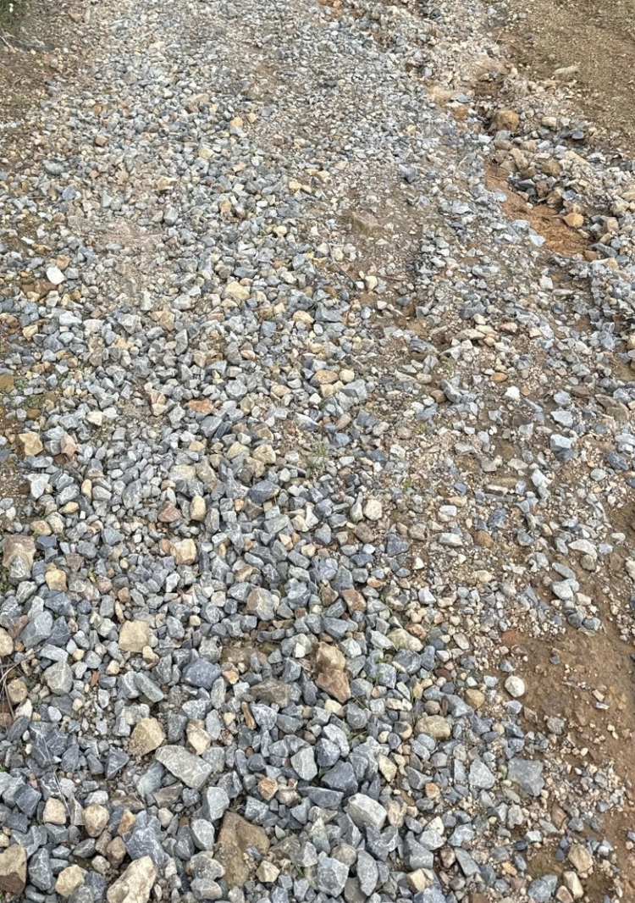
Funnily enough I trudged through really slowly at first but then got motivated to pick up the pace when I saw a Coyote behind me. I know Coyote’s aren’t the most dangerous wildlife to encounter but if it came towards me on uneven terrain I knew I wouldn’t be a happy camper.
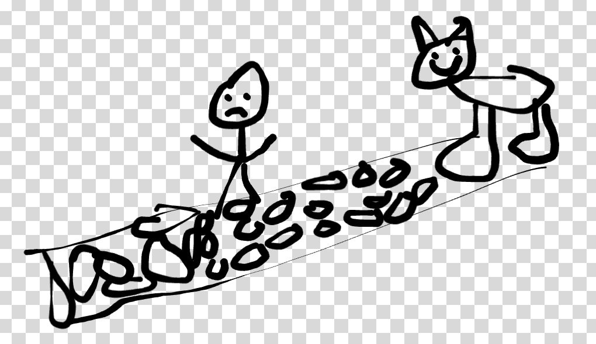
After I eventually got down I went home and kinda just chilled the rest of the day. I meant to go to game night at Detour but wound up getting engrossed in a manga instead in what I’d call pretty uncharacteristic fashion but oh well.
Wednesday
The weather was quite bad today so I mainly stayed inside and did a bit more flight school and chilled.
In the evening I started to prepare my lamb pasta for “The Enabler” and “Tightly Knit”s NYE party. Thanks to “The Mosher” and “La Tacqueria Royalty” I got some good feedback on improving the pasta. “The Mosher” told me I should season more and he gave me a number of recommendations. The one I decided to go with was pesto. “La Tacqueria Royalty” told me that when I’m boiling the water for the pasta I should add salt to it. He said to make it “salty like the Pacific Ocean” which is to say it’s really hard to add too much salt. I followed both of those and was pleasantly surprised by how it turned out
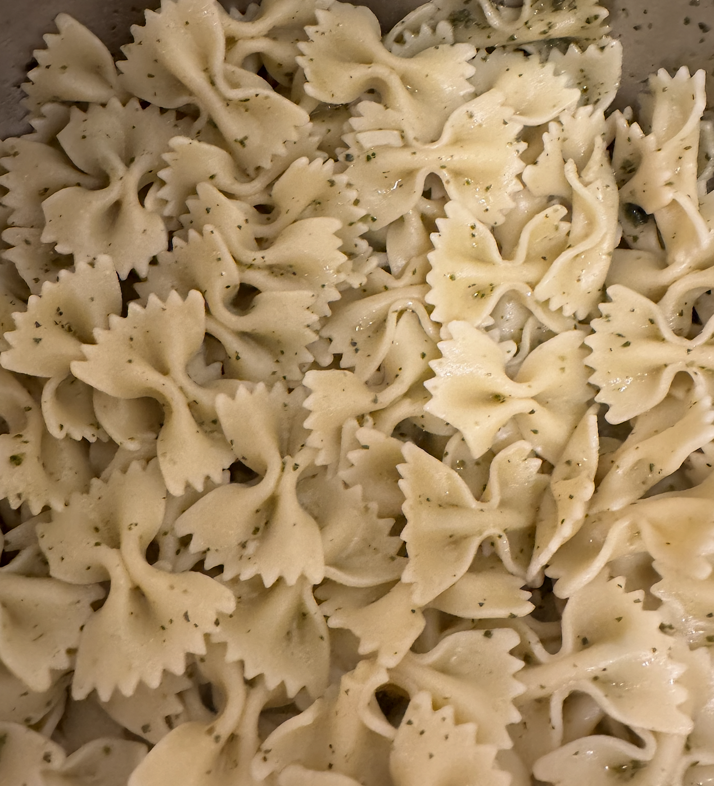
The party itself was great! “Tightly Knit” took all the food and beverages and made quite the aesthetic table spread the likes of which I would never be able to replicate on my own. It was great to catch up with a bunch of the Google group that I don’t really get to see and I got to see “The Dentist” after a while along with other members of the dental pack.
After a while we all went around and shared what some of our accomplishments were for the past year. I think this was a pretty standout year for me between leaving a job I didn’t like, getting another new job when that one didn’t work out, the half marathon, the long walks among other things but I thought it would be funniest to highlight the whole Yelp elite bit.
Eventually the clock struck midnight and I surprised everyone by popping out in a bear onesie. To explain we need to rewind the clock back to Monday during the Christmas tree run. I wish I had some kinda fade back effect like they have in TV shows so just imagine one in your head please and thanks.
During the run we saw someone wearing a bear costume and “The Enabler” said “Humza I’d like to see you in a bear costume next year!”. Of course little did he realize that I would be at his NYE party two days later which would enter into “next year”. So naturally I made sure to order a bear onesie that same night and when the clock struck midnight I put it on post haste :D.
Thursday
The weather was pretty bad today so I wound up just chilling inside. I did a bit of admin and flight school and then wound up just chilling for a while.
In the evening I decided to get out of the house and go to the SF MOMA free day. In general I’m not the biggest fan of art museums but I hadn’t been in a while and thought it might be fun to check out. After all, it's free.
When I got there the first thing I saw were some pictures of nature which at first glance didn’t look that much more impressive than anything I could take a picture of.
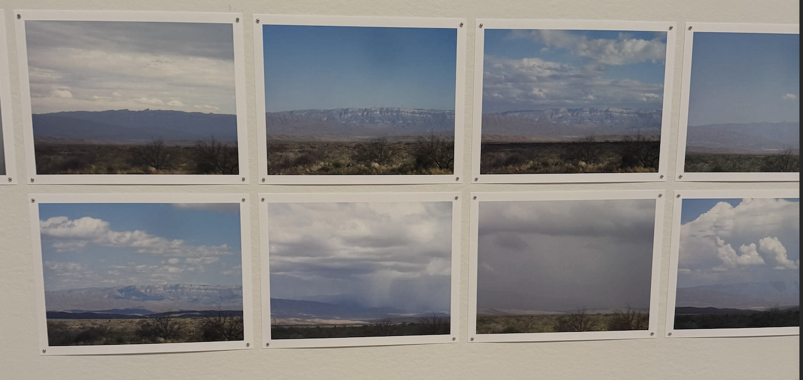
Upon reading the description this is apparently the border between the U.S and Mexico photographed over some time period I don’t remember. I guess it’s meant to be symbolic but even still it just felt … lacking to me. I know it's a bit of a cliche to say someone doesn’t “get art” but that was how this made me feel. Like could I just go over a single day and photograph a bunch of views in SF and put that together and it would be worthy to display in an art museum as “Views of SF”? I don’t know but it did get me wondering.
Thankfully my faith in art was restored when I saw some stuff below that looked genuinely sick!
CE
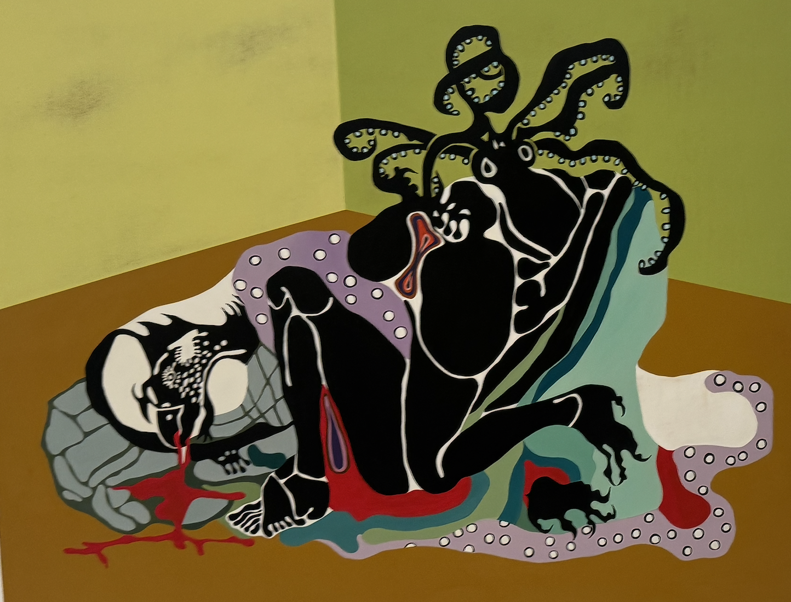
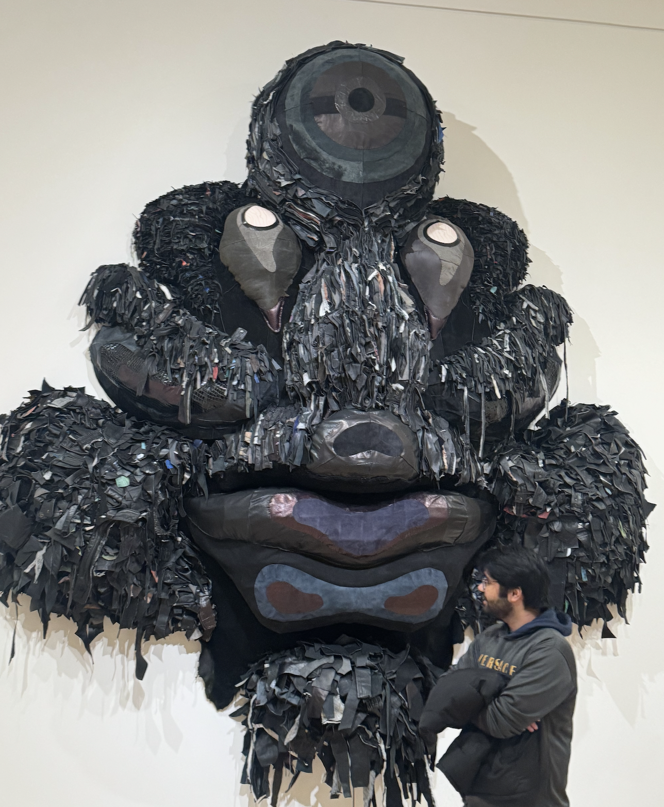
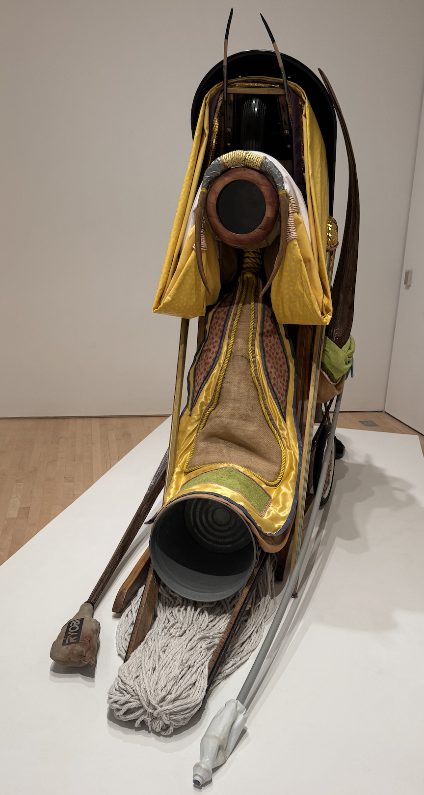
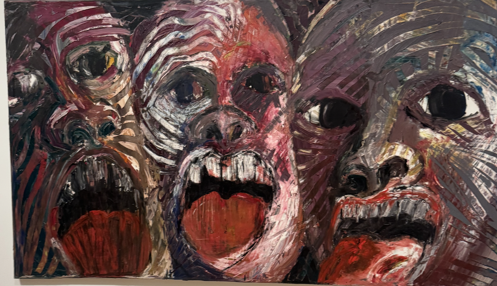
And finally no art museum would be complete without the piece of modern art that looks like a child
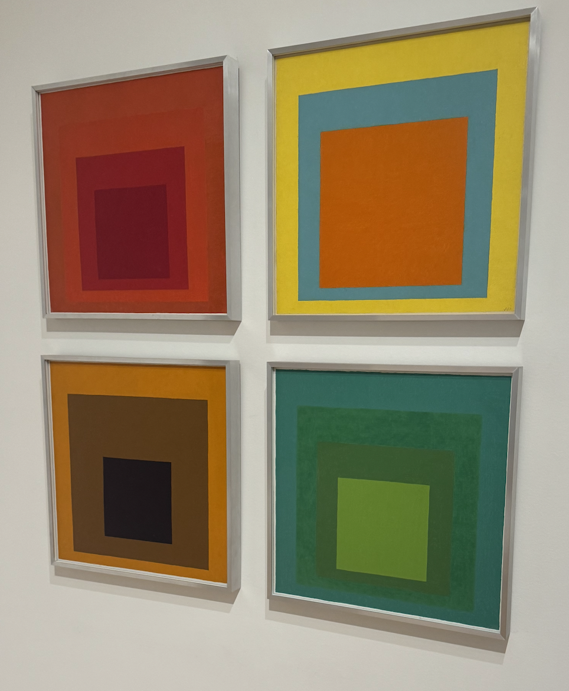
Is this money laundering?
After the museum I wound up going to Downtown First Thursday which was livelier than I would have expected given all the rain. I wound up stopping by the Civic Joy Fund booth only to find both the people there are untangling a giant mess of disco balls which I decide to help them with.
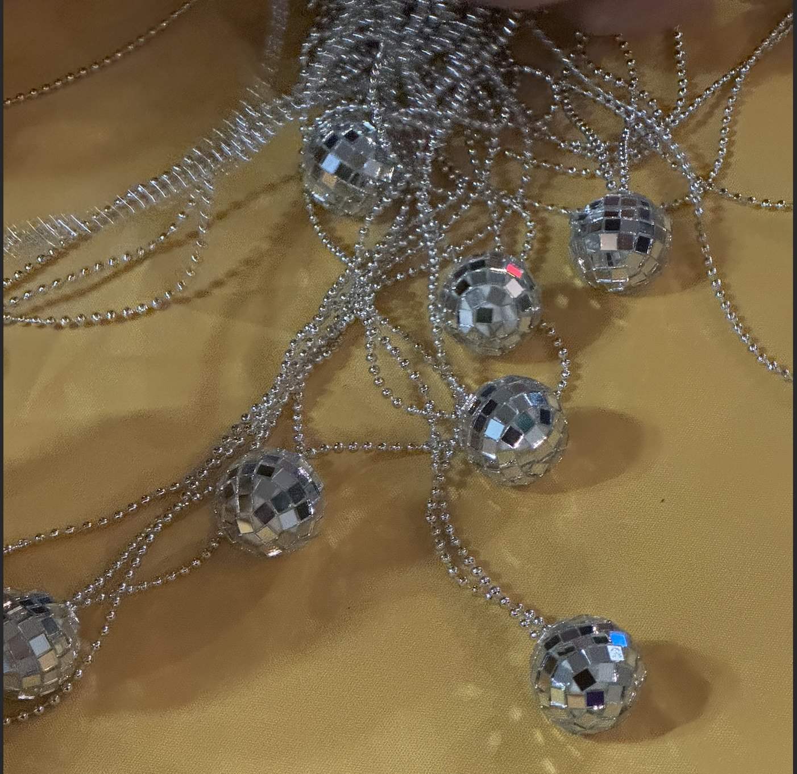
It takes us the three of us about an hour and a half to properly untangle the monstrosity fully but it was a fun community effort that I think reflects the spirit of the Civic Joy Fund
Friday
Overall a pretty chill day. I host a board game night in the evening with “The Taco,” “Top of the Rope,” “This little piggie didn’t go to the slaughterhouse,” “The Politician,” “Not a matcha bitch”, and the friend of “Granola Girlie” I met at Monday MR.
I realized that I play Secret Hitler a lot at board game nights so earlier in the day I bought a new boardgame called Avalon. It’s also a social deduction game which is pretty similar to Secret Hitler at its core but allows for a lot more customization and special characters which I’m hoping will give it some more shelf life.
If anyone reading this has board games they like let me know! I want to have a bigger selection of games that are still somewhat involved beyond party games without being too onerous. So maybe something where a round can take something on the order of 20 minutes or so. Another game I’m heavily considering is Hanabi for this sort of thing.
Saturday
First trash pickup of the new year! We’re off to a rainy start this year but great to see everyone back at it.
I met someone at pickup today who does competitive marching band for fun. I learned that competitive marching band is judged based on a few criteria including music, consistency, and artistic composition. Also tempo is king! A lot of inconsistencies can be masked by everyone moving at the same time. This guy did it a lot in high school and college and now he instructs highschoolers on how to do it!
Also a small but potentially relevant PSA is if anyone out there is annoyed that the Contacts app on the iPhone sorts by last name rather than first name you can change that in Settings by going to the Contacts app -> Sort order -> First, Last. It may just make your Contacts easier to organize :D.
We then went and helped “The Politician" pick out a birthday gift and card where we had a flyby with “The Enabler” and “Tightly Knit”. I learned that “Tightly Knit”’s sister really appreciated the bear onesie which made me happy!
Sunday
Today started off with trash pickup as per usual but it was also pretty rainy! “The Quant” and I hightailed it back 10 minutes early because of how bad the rain had gotten. After chilling for a while I went to a board game event over by Sports Basement. It was a lowkey but fun time. It reminded me of some of the boba buddies meetups I used to go way back in the day. Then I went home and wrote the newsletter.